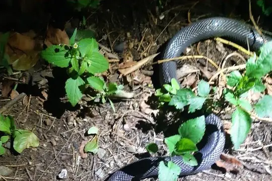

Atractaspididae
The family Atractaspididae (burrowing asps, stiletto snakes and relatives) has 72 living species in SnakeList (all venomous), in 12 genera.
- 72living species
- 72venomous
- 12genera
About the family
Poorly studied, burrowing snakes found throughout Africa and in western Asia. The stiletto snakes (Atractaspis), which give the family its name, have exceptionally long, movable fangs. The family also includes the harlequin snakes.[1,2]
Sources for this introduction
- Atractaspididae. Wikipedia.
- Review of atractaspidine snakes. PubMed Central.
Information last reviewed 9 November 2026.
Species
Showing 72 species
- No photo yetAfrican Bighead SnakeHypoptophis wilsonii
- No photo yetAfrican Snake-eaterPolemon fulvicollis
 Arabian Small-Scaled Burrowing AspAtractaspis andersonii
Arabian Small-Scaled Burrowing AspAtractaspis andersonii- No photo yetBattersby's Mole ViperAtractaspis battersbyi
 Beaked Burrowing AspAtractaspis duerdeni
Beaked Burrowing AspAtractaspis duerdeni Bibron's Burrowing AspAtractaspis bibronii
Bibron's Burrowing AspAtractaspis bibronii Black Centipede EaterAparallactus guentheri
Black Centipede EaterAparallactus guentheri- No photo yetBlack Centipede-eaterAparallactus niger
 Black Snake-eaterPolemon ater
Black Snake-eaterPolemon ater Black-headed MicrelapsMicrelaps vaillanti
Black-headed MicrelapsMicrelaps vaillanti Bocourt's Snake-eaterPolemon bocourti
Bocourt's Snake-eaterPolemon bocourti Boulenger's Mole ViperAtractaspis boulengeri
Boulenger's Mole ViperAtractaspis boulengeri- No photo yetBranch's Burrowing AspAtractaspis branchi
- No photo yetButler's Two-headed SnakeChilorhinophis butleri
- No photo yetCameroon RacerPoecilopholis cameronensis
- No photo yetCameroon Snake-eaterPolemon griseiceps
 Cameroon Snake-EaterPolemon notatus
Cameroon Snake-EaterPolemon notatus Cape Centipede EaterAparallactus capensis
Cape Centipede EaterAparallactus capensis Collared Snake-eaterPolemon collaris
Collared Snake-eaterPolemon collaris Common Purple-glossed SnakeAmblyodipsas polylepis
Common Purple-glossed SnakeAmblyodipsas polylepis Congo Burrowing AspAtractaspis congica
Congo Burrowing AspAtractaspis congica Congo Two-headed SnakeChilorhinophis gerardi
Congo Two-headed SnakeChilorhinophis gerardi Dull Purple-glossed SnakeAmblyodipsas unicolor
Dull Purple-glossed SnakeAmblyodipsas unicolor Eastern Purple-glossed SnakeAmblyodipsas microphthalma
Eastern Purple-glossed SnakeAmblyodipsas microphthalma- No photo yetEastern Snake-eaterPolemon christyi
 Elongate Quill-snouted SnakeXenocalamus mechowii
Elongate Quill-snouted SnakeXenocalamus mechowii- No photo yetEngdahl's Mole ViperAtractaspis engdahli
- No photo yetGabon Snake-eaterPolemon gabonensis
- No photo yetGraceful Snake-eaterPolemon gracilis
- No photo yetGrauer’s Snake-eaterPolemon graueri
- No photo yetGuinea Snake-eaterPolemon barthii
 Israeli Mole ViperAtractaspis engaddensis
Israeli Mole ViperAtractaspis engaddensis- No photo yetIvory Coast Snake-eaterPolemon neuwiedi
 Jackson's Centipede-eaterAparallactus jacksonii
Jackson's Centipede-eaterAparallactus jacksonii Kalahari Purple-glossed SnakeAmblyodipsas ventrimaculata
Kalahari Purple-glossed SnakeAmblyodipsas ventrimaculata Katanga Purple-glossed SnakeAmblyodipsas katangensis
Katanga Purple-glossed SnakeAmblyodipsas katangensis Kenya Two-headed SnakeMicrelaps bicoloratus
Kenya Two-headed SnakeMicrelaps bicoloratus- No photo yetLined Centipede-eaterAparallactus lineatus
- No photo yetMagretti’s Burrowing AspAtractaspis magrettii
- No photo yetMalindi Centipede-eaterAparallactus turneri
- No photo yetMichell's Quill-snouted SnakeXenocalamus michelli
 Mole Viper (aterrima)Atractaspis aterrima
Mole Viper (aterrima)Atractaspis aterrima Mole Viper (corpulenta)Atractaspis corpulenta
Mole Viper (corpulenta)Atractaspis corpulenta- No photo yetMole Viper (dahomeyensis)Atractaspis dahomeyensis
 Mole Viper (reticulata)Atractaspis reticulata
Mole Viper (reticulata)Atractaspis reticulata Mozambique Centipede EaterAparallactus nigriceps
Mozambique Centipede EaterAparallactus nigriceps- No photo yetMpwapwa Purple-glossed SnakeAmblyodipsas dimidiata
 Muller's Snake (muelleri)Micrelaps muelleri
Muller's Snake (muelleri)Micrelaps muelleri
Natal Black SnakeMacrelaps microlepidotus Natal Purple-glossed SnakeAmblyodipsas concolor
Natal Purple-glossed SnakeAmblyodipsas concolor- No photo yetOgaden Burrowing AspAtractaspis leucomelas
 Peters' Burrowing AspAtractaspis fallax
Peters' Burrowing AspAtractaspis fallax Phillips' Burrowing AspAtractaspis phillipsi
Phillips' Burrowing AspAtractaspis phillipsi Plumbeous Centipede EaterAparallactus lunulatus
Plumbeous Centipede EaterAparallactus lunulatus Reinhardt's Snake-eaterPolemon acanthias
Reinhardt's Snake-eaterPolemon acanthias- No photo yetRevoil's Short SnakeBrachyophis revoili
- No photo yetRodhain's Purple-glossed SnakeAmblyodipsas rodhaini
- No photo yetSabi Quill-snouted SnakeXenocalamus sabiensis
- No photo yetSahelian Burrowing AspAtractaspis micropholis
 Slender Quill-snouted SnakeXenocalamus bicolor
Slender Quill-snouted SnakeXenocalamus bicolor- No photo yetSmall-Scaled Burrowing AspAtractaspis microlepidota
- No photo yetSomali Burrowing AspAtractaspis scorteccii
 Spotted Harlequin SnakeHomoroselaps lacteus
Spotted Harlequin SnakeHomoroselaps lacteus Striped Harlequin SnakeHomoroselaps dorsalis
Striped Harlequin SnakeHomoroselaps dorsalis- No photo yetTeitana Purple-glossed SnakeAmblyodipsas teitana
 Transvaal Quillsnout SnakeXenocalamus transvaalensis
Transvaal Quillsnout SnakeXenocalamus transvaalensis- No photo yetUsambara Centipede-eaterAparallactus werneri
 Variable Burrowing AspAtractaspis irregularis
Variable Burrowing AspAtractaspis irregularis Watson's Burrowing AspAtractaspis watsoni
Watson's Burrowing AspAtractaspis watsoni Western Forest Centipede-eaterAparallactus modestus
Western Forest Centipede-eaterAparallactus modestus- No photo yetZaire Centipede-eaterAparallactus moeruensis
 Zaire Snake-eaterPolemon robustus
Zaire Snake-eaterPolemon robustus
No snakes in Atractaspididae match.
About the family Atractaspididae
- Distribution: living species recorded in 50 countries, on 2 continents: Africa, Asia.
- Genera: Atractaspis 22, Polemon 14, Aparallactus 11, Amblyodipsas 9, Xenocalamus 5, Micrelaps 3, Chilorhinophis 2, Homoroselaps 2, Brachyophis 1, Hypoptophis 1, Macrelaps 1, Poecilopholis 1.